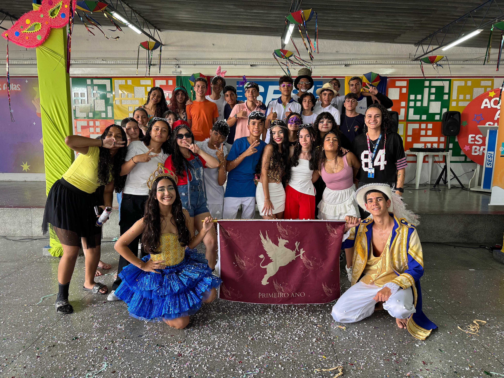

O que é o Jornal do 1° NEM?
O Jornal do 1° NEM é onde são divulgados os trabalhos do 1° NEM (Novo Ensino Médio). Proposto por nossa professora de linguagens, Élida, busca intregar tecnologia e educação.
Quem somos?

Saral Cultural:
Adrielle, teatro
Teatro
Richard e Silva, Teatro
Renato e Rhayra, apresentadores
Música
Internet e Fake News
Internet e seus riscos e benefícios.
O vídeo a seguir discutirá os perigos da internet, enfatizando a importância de se proteger contra desinformações, golpes, cyberbullying e a perda de dados. Também abordará o papel essencial dos influenciadores digitais...
Saiba MaisVerifique antes de compartilhar!
O vídeo fala oque são os influenciadores e como eles impactam na vida das pessoas.Falamos tbm sobre as consequências da fake news...
Saiba MaisAprenda sobre fake news e como identificar elas.
Nosso apresentador, Renato, irá explicar á você, sobre as fake news, seus perigos e também de como...
Saiba MaisNão caia em fake news.
O vídeo a seguir falará resumidamente sobre o que são as fake news,entrevistará pessoas e enfatiza os...
Saiba Maisinfluenciadores na disseminação de fake news
Os influenciadores desempenham um papel significativo na disseminação de notícias falsas, que podem causar danos irreparáveis à sociedade. Com milhões de seguidores, esses influenciadores têm o poder de moldar opiniões e ...
Saiba Mais